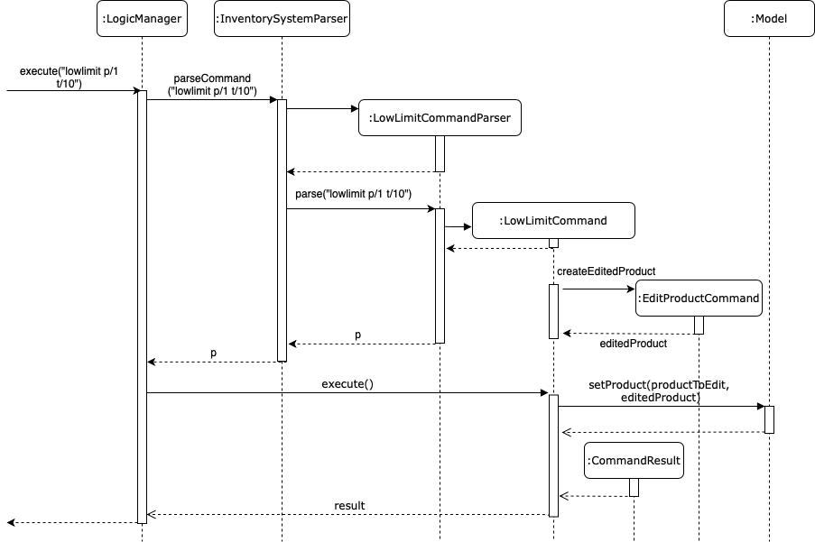
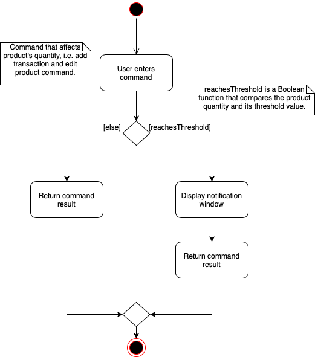
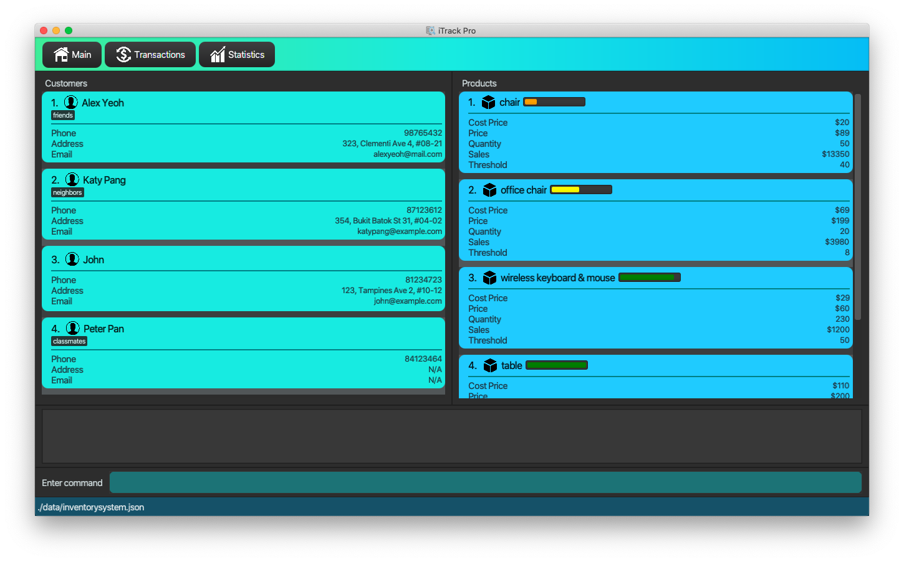
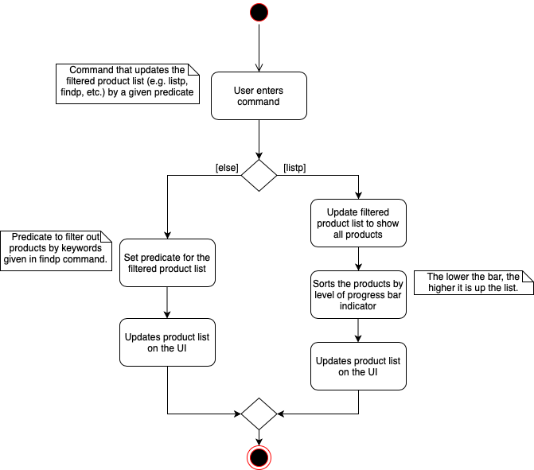

Overview
iTrack Pro is for the grocery shop owners to keep track of the products, customers, and transactions of the shop and have a better understanding of the business by viewing the performance of products and behaviors of customers. It is also able to provide an analysis of the entire business to help the owner manage the shop.
Summary of contributions
-
Major enhancement:
-
Added the ability to find customers by specified attributes
-
What it does: allows the user to locate customers easily by name, address, email or phone number.
-
Justification: This feature improves the application significantly because user can have many customers, and it can be difficult to keep track of customers manually.
-
Highlights: The original find feature was only by name, the implementation has to be changed and refactored to accommodate finding by other attributes too.
-
-
Added visualisation of product balance on Product Ui via progress bar indicator
-
What it does: allows the user to easily identify stocks that are running low.
-
Justification: This feature improves the application significantly as users would not have to struggle looking at numbers only to see which stock is running low soon.
-
Highlights: This enhancement required an in-depth analysis of design alternatives. The difficult part was to determine how the remaining stock was to be calculated, and the best way to structure the classes.
-
-
-
Minor enhancement:
-
Added a command history feature that allows the user to navigate to previous commands using up/down keys (Pull request #92)
-
Added lowlimit command that allows the user to set individual product low quantity threshold (Pull request #98)
-
Added notification popup window when stock quantity goes below threshold (Pull request #99)
-
Added cost price field to Product class to calculate profit (Pull request #114)
-
Updated ui for statistics window (Pull request #129)
-
Added web view for help window (Pull request #200)
-
-
Code contributed: tP-dashboard
-
Other contributions:
-
Project management:
-
Managed releases
v1.1-v1.3(4 releases) on GitHub -
Reviewed and merged teammates' pull requests
-
Created and managed milestones & issues
-
-
Enhancements to existing features:
-
Documentations:
-
Added user stories in Developer Guide (Pull request #20)
-
Combined customer and product common features for Developer Guide (Pull request #110)
-
Updated User Guide to reflect latest application Ui and features (Pull requests #127, #138, #189)
-
Updated Developer Guide with implemented feature (Pull request #196)
-
-
Community:
-
Contributions to the User Guide
Given below are sections I contributed to the User Guide. They showcase my ability to write documentation targeting end-users. |
Adding a customer: addc
Adds a customer to the customer list
Format: addc n/NAME p/PHONE_NUMBER [e/EMAIL] [a/ADDRESS] [t/TAG]…
|
The email field [e/] is optional, and will be recorded as N/A if left empty. The address field [a/] is optional, and will be recorded as N/A if left empty. |
Examples:
-
addc n/John Doe p/98765432 e/johnd@example.com a/John street, block 123, #01-01 -
addc n/Betsy Crowe t/friend e/betsycrowe@example.com a/Newgate Prison p/1234567 t/criminal
Editing a customer: editc
Edits an existing customer in the customer list.
Format: editc INDEX [n/NAME] [p/PHONE] [e/EMAIL] [a/ADDRESS] [t/TAG]…
Examples:
-
editc 1 p/91234567 e/johndoe@example.com
Edits the phone number and email address of the 1st customer to be 91234567 and johndoe@example.com respectively. -
editc 2 n/Betsy Crower t/
Edits the name of the 2nd customer to be Betsy Crower and clears all existing tags.
Deleting a customer: deletec
Deletes the specified customer from the customer list that is currently being displayed.
Format: deletec INDEX
| Deletes transactions that are associated with this particular customer as well. |
Examples:
-
listc
deletec 2
Deletes the 2nd customer in the customer list. -
findc n/Betsy
deletec 1
Deletes the 1st customer in the results of the find command.
Setting the low-inventory threshold : lowlimit
Sets the notification threshold for individual product and updates the bar indicator of the product.
Format: lowlimit p/PRODUCT_ID t/THRESHOLD
|
The default threshold represents 20% of the desired quantity. The quantity threshold can take integers up to 1000000. |
Examples:
-
lowlimit p/1 t/20
Sets the low inventory threshold for the 1st product as 20.
Keeping track of products that are running low on stock
The product list updates and sorts by the progress bar indicator when user uses the listp command.
Products are ordered by the level of progress bar indicator. (E.g. the lower the bar, the higher it is in the list).
This is to help the user easier to know which products are running low on stock.

|
This is a passive feature. Green: >0.6 Yellow: 0.6 Orange: 0.4 Red: 0.2 |
Reusing previous inputs
The application keeps the history of previous inputs that was keyed in the command line.
| The history is deleted after application closes. |
Contributions to the Developer Guide
Given below are sections I contributed to the Developer Guide. They showcase my ability to write technical documentation and the technical depth of my contributions to the project. |
Setting low limit threshold to receive notifications for products
The low limit mechanism is facilitated by InventorySystemParser.
First, the InventorySystemParser class parses the user command.
Then the LowLimitCommandParser parses the user input arguments into LowLimitCommand object.
The resulting LowLimitCommand is executed by the LogicManager.
The command execution sets the updated threshold for the chosen product.
The result of the command execution is encapsulated as a CommandResult object which is passed back to the Ui.
The command inherit from superclass Command and require command parser to parse the user input arguments.
The following sequence diagram shows how the low limit operation works:

Design Considerations
Aspect: How the threshold field is being updated.
-
Alternative 1 (current choice): Separate low limit threshold command with edit product command
-
Pros: Decreases coupling, easier to test.
-
Cons: Additional command to edit the field of an product.
-
-
Alternative 2: Integrate with existing edit product command
-
Pros: Will reduce number of commands the user needs to use.
-
Cons: Hard to unit test, increase coupling.
-
Notification window for products
The notification window appears whenever an product’s quantity reaches the threshold that was set. It comes with information such as the product’s description and remaining quantity left.
The following activity diagram shows how the operation works:

Design Considerations
Aspect: Display of the notification window
-
Alternative 1 (current choice): Only display product’s name and remaining quantity.
-
Pros: User friendly, easy to implement.
-
Cons: Have to find and change the product’s quantity via the command line.
-
-
Alternative 2: Provide quick way to change product’s quantity via GUI
-
Pros: Speeds up the process of stocking up.
-
Cons: Hard to do testing for GUI, and project scope was on command line application.
-
Sorting of Product List
The product list sorts by the progress bar indicator beside each product’s description whenever user enters listp command.
An example is shown below:

The following activity diagram shows how the operation works:

Design Considerations
Aspect: When to sort the product list
-
Alternative 1 (current choice): Sorts only when user uses
listpfunction.-
Pros: More intuitive and user friendly.
-
Cons: Might be hard to track products' remaining balance without listing all the products.
-
-
Alternative 2: Sorts whenever the product list is updated.
-
Pros: Easy to track products' remaining balance.
-
Cons: Might be confusing for user as the indexes for product will change as the product list is sorted automatically, resulting in user to recheck products' index before entering in commands.
-